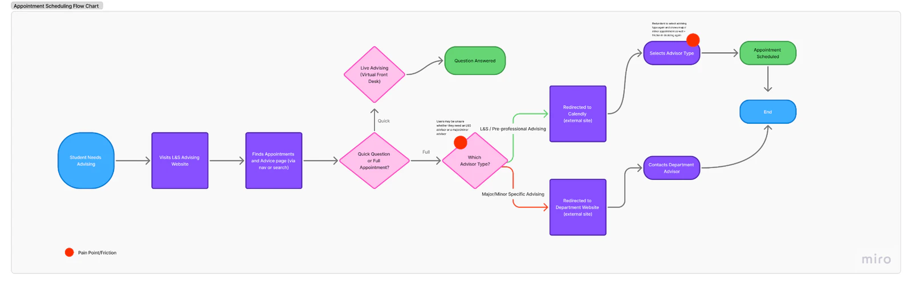
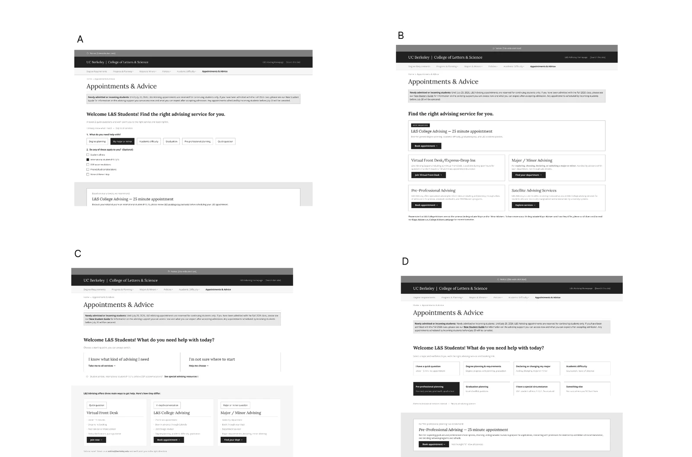
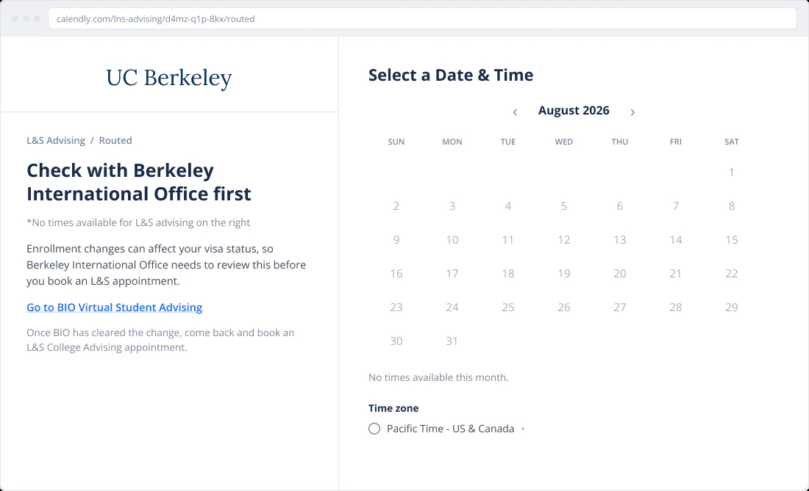
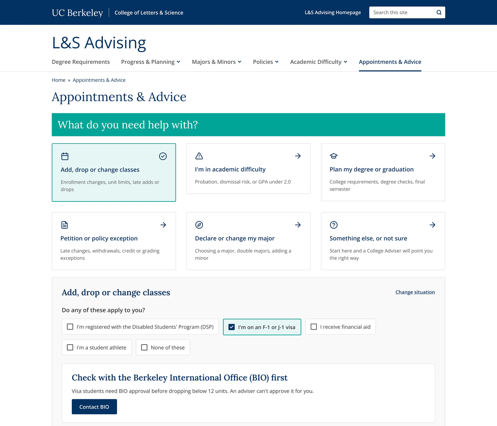
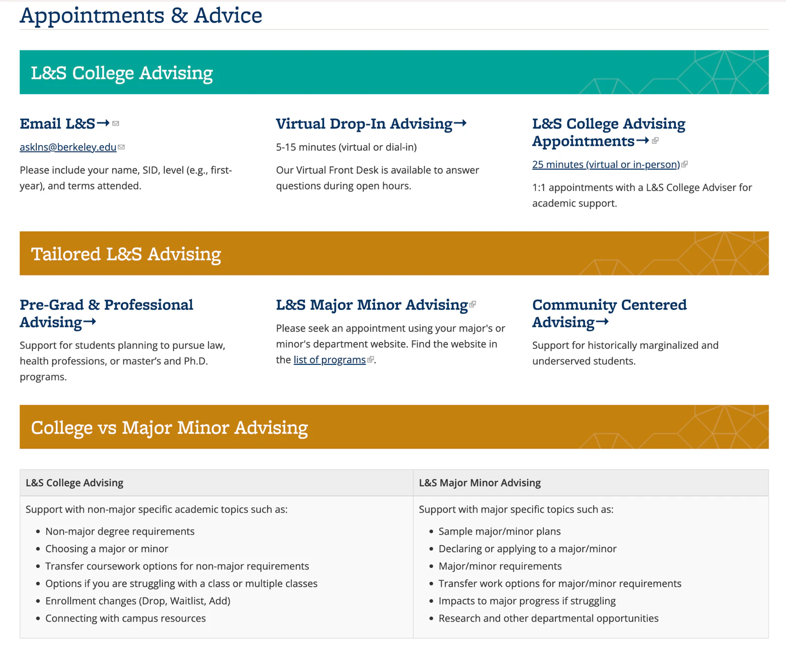
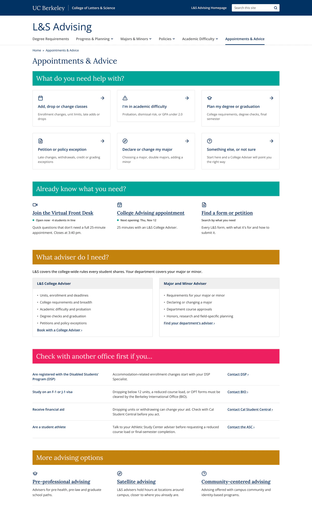
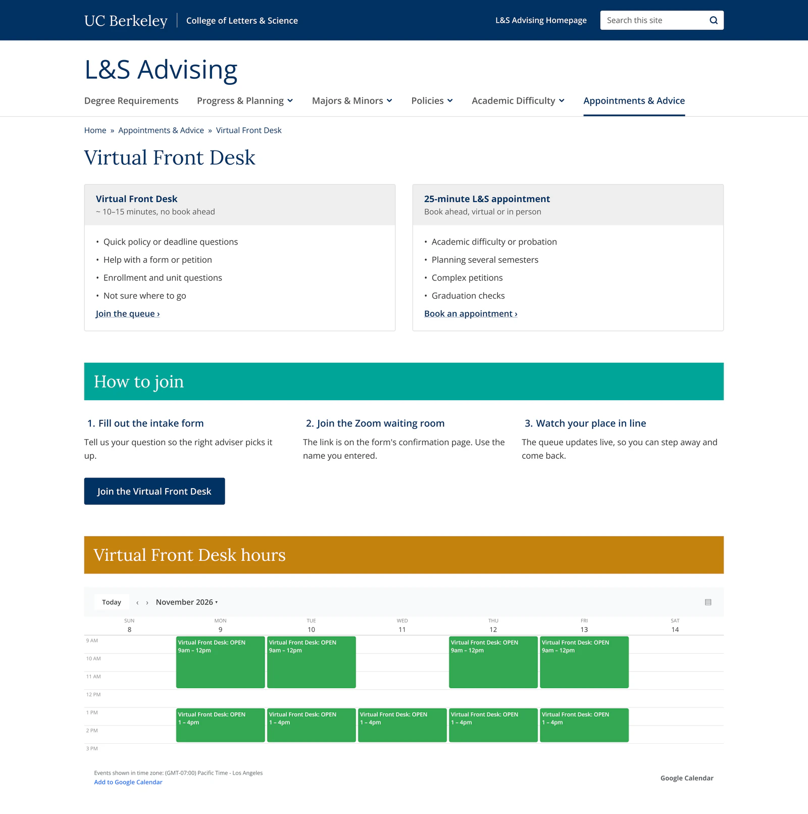
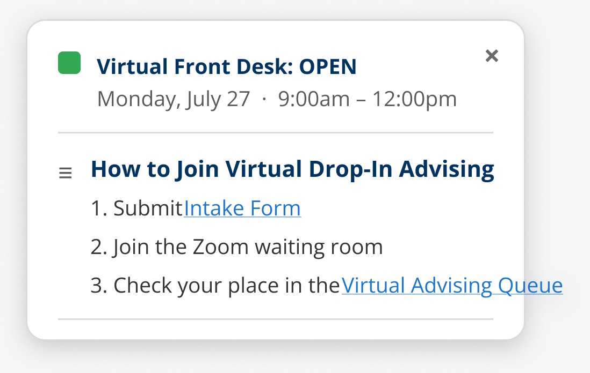
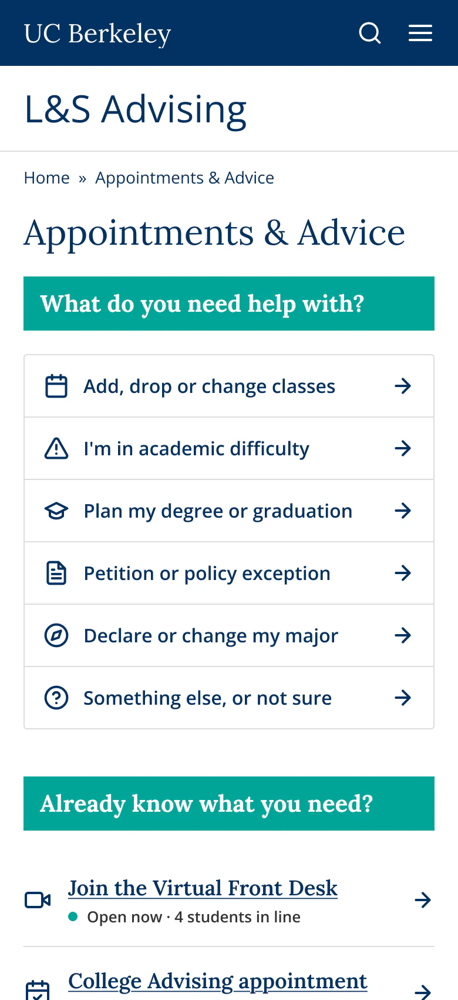
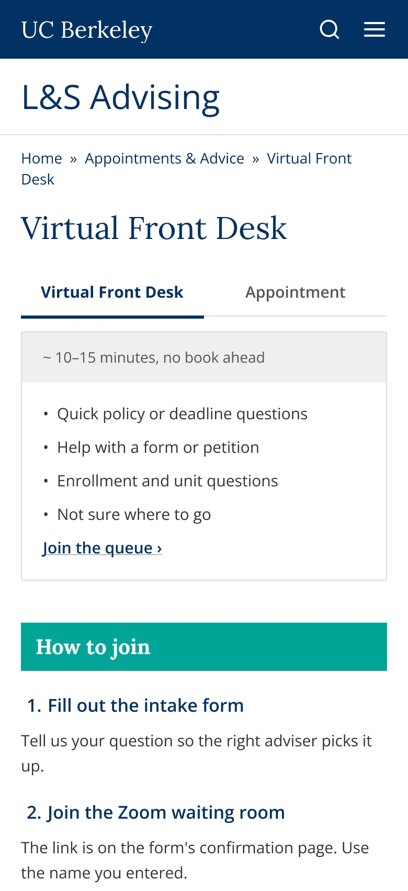

Making Student Advising Easier to Navigate
Role
UX Design Intern
Berkeley IT
Timeline
Summer 2026
Team
Berkeley IT UX Team
L&S Advising (client)
Skills
Research
Interaction Design
Prototyping
Context
Students had to understand advising before they could get it.
The College of Letters & Science is Berkeley’s largest college, with about 20,000 undergraduates. Its advising site is where they book appointments, find forms and get quick help, but first they had to work out which kind of advising they needed.
My client was L&S Advising. They knew students were struggling with the site but not which problem to solve first, so they handed me what they had, 261 unread survey responses and the site itself, and asked me to figure out where to start.
L&S College Advising
College-wide rules, enrollment, academic difficulty
25-minute appointment
Major & Minor Advising
Requirements and planning for one department
Booked on each department’s site
Live advising
Quick questions at the Virtual Front Desk
Drop in during open hours
The Problem
The most-visited page was also the most confusing.
I coded the survey responses and lined them up against the site’s analytics to see where what students said matched what they did.
261
student survey responses
101,353
sessions in Google Analytics
8,884
on Appointments & Advice, the most-visited page
Navigation showed up on both sides of the survey: it was students’ biggest frustration, and the second thing they valued most when it worked.
| Difficult website navigation and organization | 98 |
|---|---|
| Outdated or hard-to-find information and forms | 79 |
| Difficulty scheduling advising appointments | 61 |
| Information overload and website clutter | 50 |
| Availability of resources and information | 119 |
|---|---|
| Ease of navigation | 112 |
| Visibility of important deadlines | 66 |
| Accessibility of advising and appointment scheduling | 55 |
Research
A heuristic review wouldn’t have found this.
The brief asked for a heuristic evaluation. But students weren’t stuck on individual buttons; they were stuck getting from “I need help” to the right person. So I mapped the full journey through Appointments & Advice, the Virtual Front Desk and Forms & Petitions instead.

Choosing a path was the hardest step
Students had to tell L&S, major and minor, and live advising apart before they could do anything else.
The Virtual Front Desk was hard to find
Students valued it once they got there, but the guidance on when to use it came too late.
The booking rules sat at the bottom
Whether athletes, visa holders or aid recipients could book at all was written as prose at the end of the page.
The Constraint
The best idea didn’t fit the platform.
I explored four concepts for Appointments & Advice. Three sorted students by their situation: answer a question or two and get pointed to the right service. The fourth simply reorganized the existing content into cards and a comparison table.

In review, we found that Open Berkeley, the university’s site builder, couldn’t support any of the sorting concepts. The page was built with the simpler structure, and sorting moved off the page: first into a Qualtrics questionnaire, then, at L&S’s request, into Calendly, which only allowed single-choice questions and one recommendation at the end.
Testing
Testing showed exactly where the workaround broke.
I ran nine moderated sessions with undergraduates across class years and majors. They worked through real scenarios on the rebuilt pages and the Calendly flow, then compared each with the live site.
7 of 8
participants who reached the visa redirect looked at the empty calendar first, and some thought the page was broken.

Yeah, it’s broken. I guess after realizing it’s broken, I will start reading.
Participant
When you reach this page, the first thing that you would notice is the calendar, not the instructions that are off to the side.
Participant
“DSP” meant nothing
Four participants didn’t know the acronym, and one answered a screening question wrong because of it.
The button came too late
Three said they’d have acted before reaching the intake button at the bottom of the Virtual Front Desk page.
Students missed color and icons
Five noticed the old site’s visual cues were gone, even while preferring the new structure.
The Redesign
So I designed the version I’d ship without the platform.
Concept · not shipped
I took the findings into an unconstrained redesign: what the pages could be if they were free to sort students themselves.
Sorting on the page
The questions worked; Calendly didn’t. So sorting moved back onto the page. Students pick the tile that matches their situation, check off anything that applies, and get a next step. A visa student sees a Berkeley International Office card, with no calendar to misread.

Color that means something
Students missed the old site’s color, but they read different colors as different kinds of sections. So each color got one job.
Tested build

Redesign

One Virtual Front Desk
“Virtual Front Desk” and “Virtual Express Drop-ins” used the same form and the same Zoom link, so students were choosing between two names for one service. The redesign uses one name, puts the steps to join above the hours, and lets students click any open block on the calendar to see how to join.
Tested build
Redesign


Mobile
On phones, situation tiles become compact rows, the two services sit in tabs, and section bands slim down so the first choice shows without scrolling.


Working with AI
AI sped up the repetitive work, not the judgment.
I used AskAI in Google Sheets to code the survey responses, Claude Code with the Figma API to build repetitive components and a coded prototype, and Dovetail to transcribe and tag the nine sessions. Each needed checking by hand: AskAI missed responses with more than one theme, Claude Code introduced prototype performance issues, and Dovetail sometimes misread what participants meant. I went back to the original responses and recordings to fix them.
Impact
What shipped, and what it would change.
Built
The redesigned Appointments & Advice and Virtual Front Desk pages, in Open Berkeley.
8 of 9
participants preferred the redesigned layout over the current site.
Delivered
Findings and recommendations to the L&S Advising team.
Projected, if the concept ships
~4 → 1
decisions before booking, down to one choice about their situation.
≤ 3 clicks
from landing on the page to booking.
Reflection
Learn the platform before you design for it.
My strongest concepts assumed the page could sort students, and I only learned it couldn’t after designing them. Next time I’d find the platform’s limits first, because they decide what’s possible. I’d also test more than one path through a flow. Everyone walked the visa route, so we learned a lot about that path and nothing about the others.